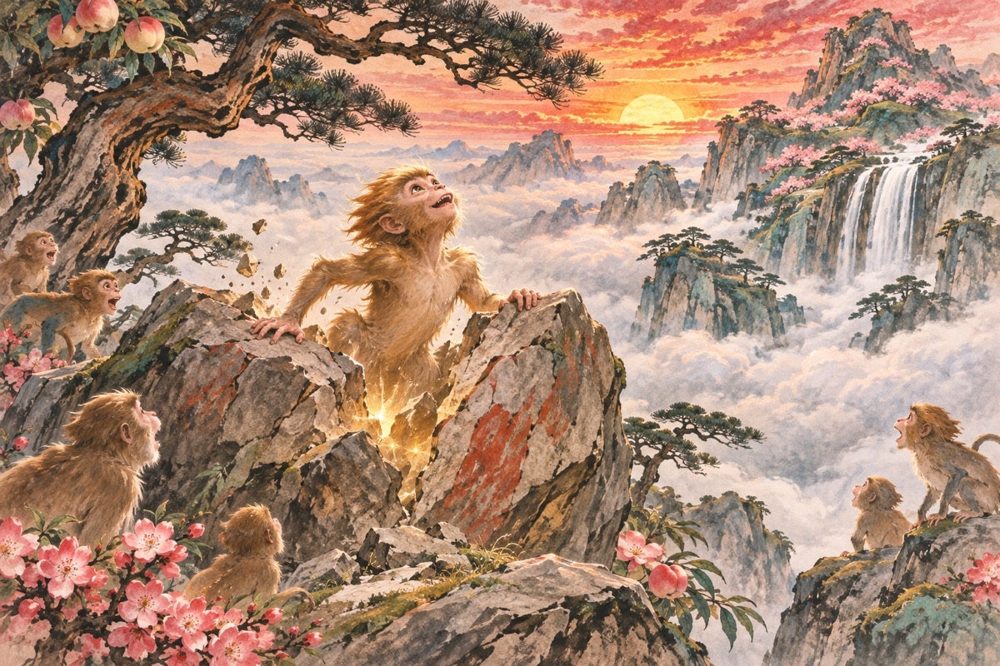
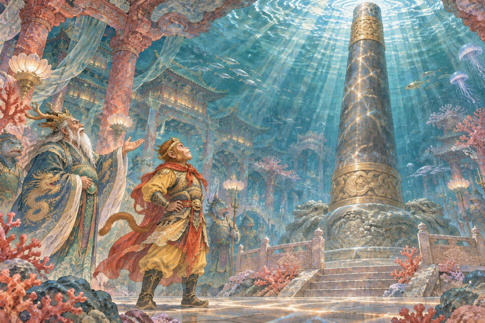
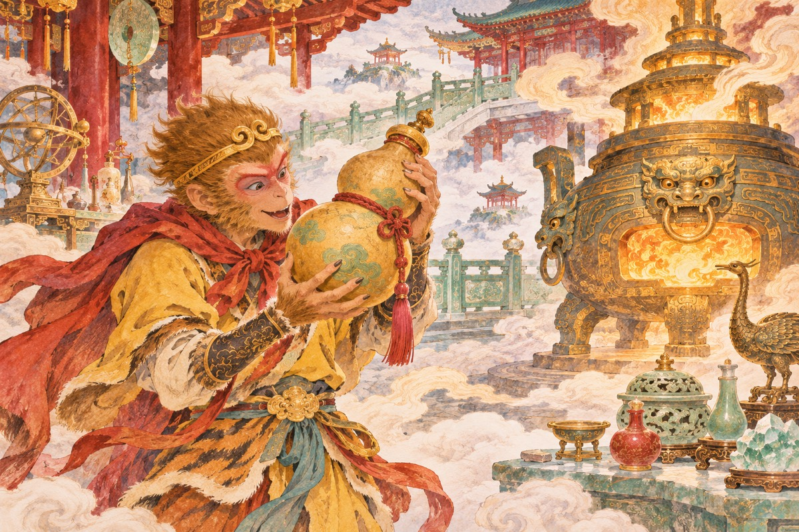
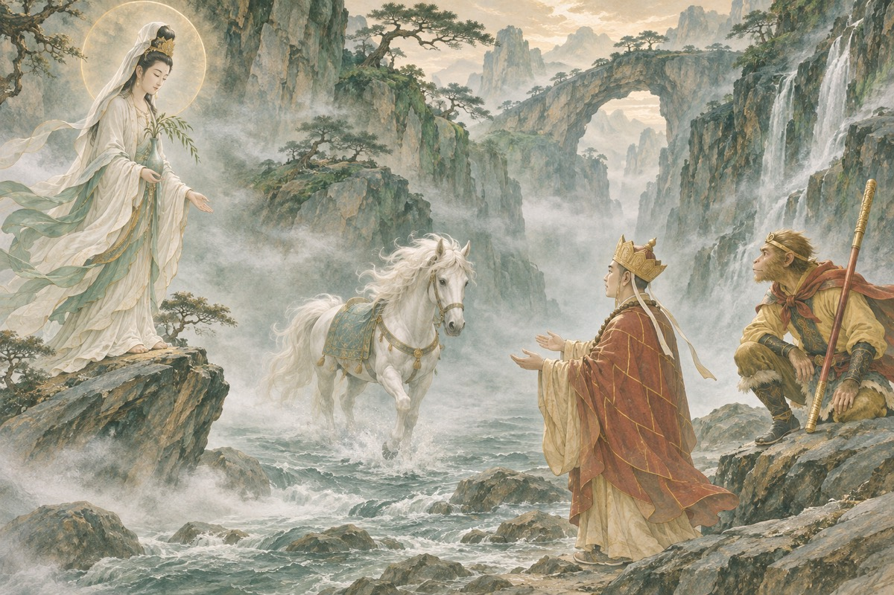
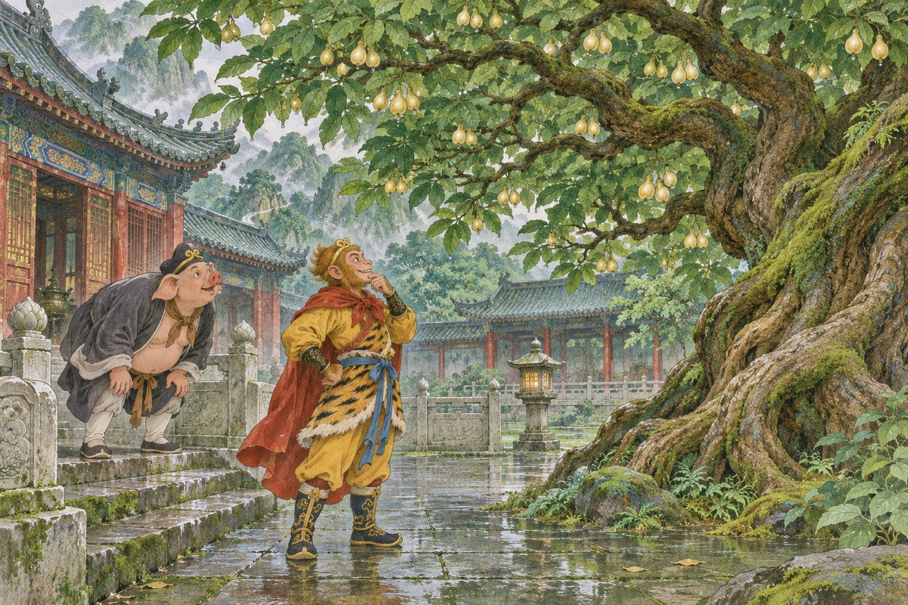
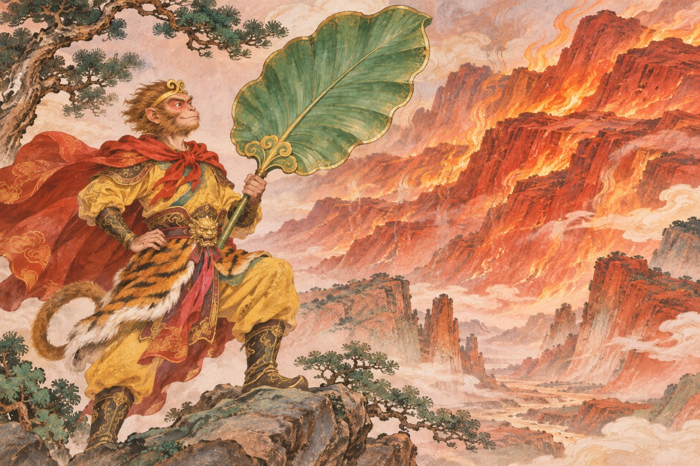
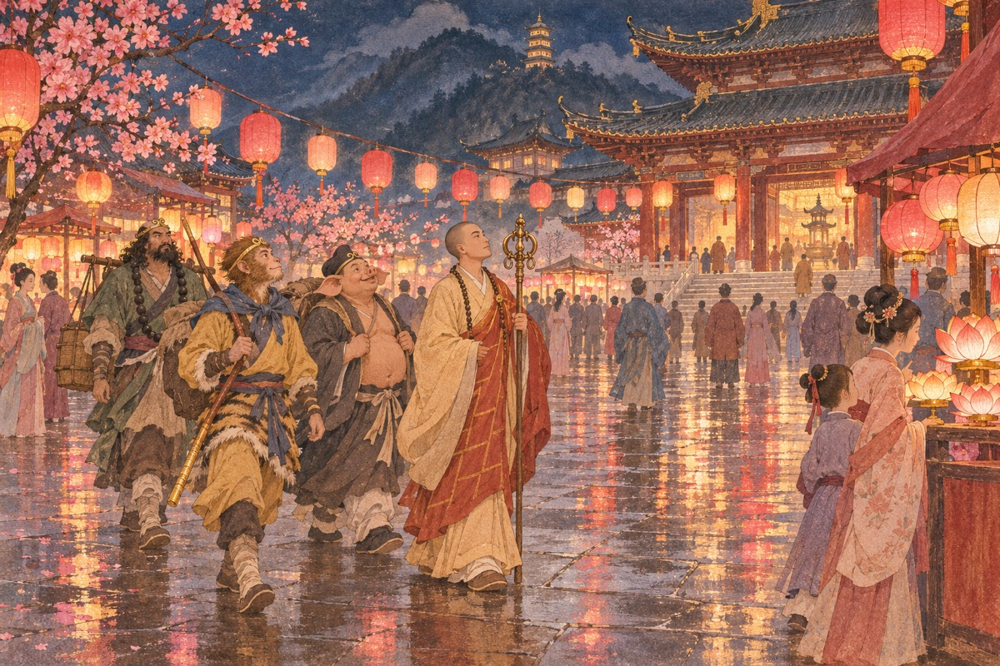
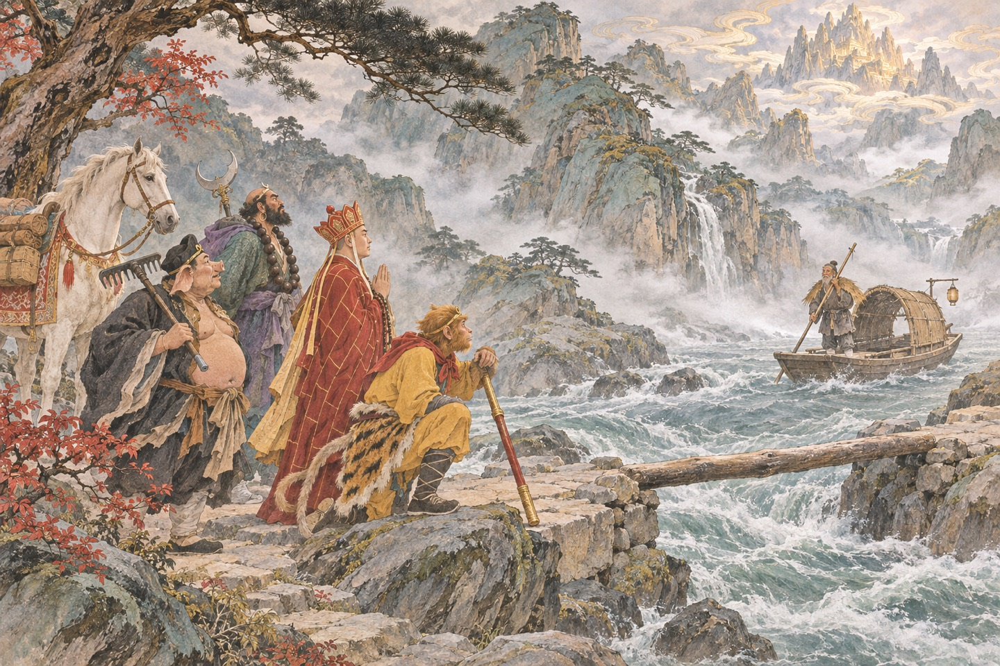

石猴出世
东胜神洲傲来国花果山顶，有一块仙石，自开天辟地以来就受天真地秀、日精月华。石上九窍八孔，按九宫八卦。一天，仙石迸裂，产出一个石卵，见风化作一只石猴。石猴眼运金光，射冲斗府，惊动了玉帝。玉帝命千里眼、顺风耳查看，回报说是一块石头产了猴子，在那里拜四方。玉帝说：不足为异。这只猴子后来跳进水帘洞，被群猴尊为美猴王，过了三五百年，忽然在宴席上哭起来——他想到自己将来要死。玉帝听说石猴出世，说：不必管他。他不知道，这只猴子将来会打上灵霄殿。那块石头裂开的时候，惊动了天宫。玉帝派千里眼顺风耳去看，回来说：是一只石猴，眼放金光。玉帝说：不必管他。

拜师菩提
美猴王为了求长生，扎了个木筏，漂洋过海，走了十几年，到了西牛贺洲灵台方寸山。山中一位菩提祖师收他为徒，赐名孙悟空。祖师教他洒扫应对、进退周旋，又教他七十二般变化和筋斗云，一个筋斗十万八千里。悟空学得最快，也最得意，在师兄弟面前卖弄本事。祖师看见了，说：你走吧，以后惹出祸来，不许说是我徒弟。悟空磕了头，含泪下山。他后来的所有本事，都来自这三年。祖师教他筋斗云，一个筋斗十万八千里。悟空问：能飞出天吗？祖师说：天无边。他后来才知道，天是如来的手掌。菩提祖师问他姓什么，他说：我没有姓。祖师说：那我给你起一个，叫孙悟空。他跳起来说：好，好。祖师说：你还没学会本事，先别高兴。
龙宫取宝
悟空回到花果山，发现猴子们被一个混世魔王欺负。他打死了魔王，又觉得自己的兵器不趁手。老猴说：东海龙宫有的是宝贝。他一个猛子扎进东海，闯进龙宫。龙王拿出九股叉、方天戟，他都嫌轻。龙王带他去看定海神针——一根斗来粗、二丈长的铁柱子。悟空一摸，说：再短些细些才好。那柱子果然短了几尺。他再摸，又短了几尺。最后变成一根碗口粗细、丈二长短的如意金箍棒，两头是金箍，中间是乌铁。悟空拿到金箍棒，耍了一路，把龙宫震得摇晃。龙王说：这棒是大禹治水时留下的。悟空说：那它认得我。他闯进龙宫，说：老龙王，借件兵器。龙王拿出三千六百斤的叉，他说太轻。拿出七千二百斤的戟，他说还轻。最后抬出定海神针，一万三千五百斤，他拿在手里说：趁手。

勾销生死簿
悟空有了金箍棒，又去地府。他喝醉了酒，被两个勾死人勾到森罗殿。他说：我老孙超出三界外，不在五行中，凭什么勾我？他拿过生死簿，翻到猴属一类，把自己和所有猴子的名字都划了，把笔一扔，一路打出地府。十殿阎王告到玉帝那里。玉帝本想派兵，太白金星说：不如招安，给他一个官做，免得动干戈。悟空勾掉生死簿上猴属的名字，说：从今天起，我们不归你管。十殿阎王跪在地上，说：大圣，使不得。他说：使得。他醉后被勾到地府，拿起笔把生死簿上猴类的名字全划了。阎王告到天宫，玉帝说：先招安吧。
弼马温
玉帝封悟空为弼马温。他欢欢喜喜去了御马监，把一千匹天马养得膘肥体壮。半个月后，他问属官：我这弼马温是几品？属官说：没品，就是个养马的。悟空大怒：俺老孙在花果山称王，怎么哄我来养马！他踢翻公案，取出金箍棒，打出南天门，回花果山去了。他竖起一面旗，上写“齐天大圣”，从此自称。悟空听说弼马温是养马的，把公案踢翻，说：俺老孙在花果山称王，怎么哄我养马！他打出南天门，一路没人敢拦。他上天做了弼马温，养了半个月马，问手下：这官多大。手下说：不入流。他把桌子掀了，说：老子不干了。
齐天大圣
玉帝派托塔李天王和哪吒领兵去捉，被打得大败。太白金星又出主意：就封他个齐天大圣，给个空衔，不给他事管。玉帝准了。悟空上天，做了齐天大圣，府第建在蟠桃园旁边。他闲来无事，把蟠桃园的土地叫来问：这桃树有多少株？土地说：三千六百株，前面一千二百株三千年一熟，吃了成仙；中间一千二百株六千年一熟，吃了长生不老；后面一千二百株九千年一熟，吃了与天地同寿。悟空听了，天天去偷桃。玉帝封他齐天大圣，给他建了府。悟空问：这官多大？太白金星说：大，大得很。他不知道，那是个空衔。他回到花果山，立了一面旗，写「齐天大圣」。玉帝派兵去抓，抓不住，只好承认，给他修了一座齐天府，让他看蟠桃园。
大闹天宫
王母娘娘开蟠桃会，请了各路神仙，唯独没请齐天大圣。悟空变作赤脚大仙，混进瑶池，把仙酒仙肴吃了个饱，又醉醺醺地闯进太上老君的兜率宫，把炼好的金丹像炒豆一样吃了。他知道闯了祸，一个筋斗回花果山。玉帝大怒，派十万天兵天将，布下十八架天罗地网。悟空全无惧色，一根金箍棒，打得天兵天将不敢近身。蟠桃会上，悟空变作赤脚大仙，把仙酒仙肴吃了个饱。他喝醉了，闯进兜率宫，把金丹像炒豆一样吃了。他把蟠桃吃了大半，又把太上老君的仙丹吃光，喝醉了闯进兜率宫。玉帝派十万天兵，打不过他。最后是如来来了。

火眼金睛
观音菩萨举荐二郎神。二郎神与悟空斗了三百回合，不分胜负。两人都现出法天象地的本相，打得山崩地裂。太上老君在云端看得手痒，取下金刚镯，往下一扔，正打中悟空天灵。悟空跌了一跤，被哮天犬咬住腿肚子，众神一拥而上，把他捆了。玉帝下令：刀砍斧剁，雷劈火烧。可悟空吃了仙丹、蟠桃，已是铜头铁臂，怎么都伤不了。老君说：放我八卦炉里炼。老君把悟空放进八卦炉，炼了四十九天。开炉时，悟空跳出来，一脚踢翻丹炉，说：老官，你炼得我好！太上老君把他放进八卦炉烧了七七四十九天。他躲在巽位，只有风没有火，眼睛被烟熏坏了，成了火眼金睛。炉子打开那天，他一脚踢翻丹炉，打上凌霄殿。
压在五行山
八卦炉里，悟空躲在巽位——那是风口，有风无火。烟熏了四十九天，把他的眼睛熏成了火眼金睛。第四十九天，老君开炉取丹，悟空一脚踢翻丹炉，从炉里跳出来，一路打到灵霄殿外。玉帝没办法，派人请如来。如来与悟空打赌：你一个筋斗能翻出我的手掌心，就把天宫让给你。悟空一个筋斗翻到天边，看见五根肉柱，在上面写了“齐天大圣到此一游”，还撒了泡尿。回来才知道，那是如来的五根手指。他被压在五行山下，一压五百年。如来把悟空压在五行山下，说：等你什么时候想明白了，自有人来救你。悟空喊：我想明白了！如来说：你没有。如来跟他打赌：你一个筋斗翻不出我的手掌。他翻了一个筋斗，看见五根肉柱，写了「齐天大圣到此一游」，还撒了泡尿。回来一看，字在如来手指上。
金蝉遭贬
唐僧的前世是如来的二弟子金蝉子。一次讲经，他打了个瞌睡，如来罚他转生东土，历十世修行。前九世他都走到流沙河，被沙僧吃了，脖子上的九个骷髅就是他的头骨。第十世，他叫玄奘。所以取经不是从长安开始的，是从灵山开始的；八十一难的第一难，也不是遇到妖怪，是被贬下凡。金蝉子被贬时，如来问：你可知错？他说：我不知。如来说：你轻慢佛法。他说：我只是困了。金蝉子听佛讲经时打了个盹，被贬下凡，转世十次。前九次的取经人都在流沙河被吃了，骷髅挂在沙僧脖子上。
唐僧出世
五百年后，大唐贞观年间。海州陈光蕊中状元，娶了丞相之女殷温娇，赴江州上任途中被水贼刘洪打死，冒名顶替。殷温娇已怀身孕，忍辱生下儿子，怕被刘洪所害，把孩子放在木盆里，附上血书，推入江中。木盆漂到金山寺，被法明和尚救起，取名江流儿。十八年后，江流儿出家，法名玄奘，知道了身世，报了父仇。唐僧的母亲把他放在木盆里，附上血书，推入江中。她咬破手指写：此子名江流，父陈光蕊，被贼所害。唐僧的父亲陈光蕊中状元，娶了殷小姐，赴任途中被船夫打死。船夫冒名上任，殷小姐生下孩子，把他放在木盆里顺水漂走。
取经的缘起
唐太宗李世民因泾河龙王一案，魂魄被勾到地府。判官崔珏给他添了二十年阳寿，放他还阳。太宗还阳后，办水陆大会超度亡灵。观音菩萨现身，说西天有大乘佛法三藏，可度亡者升天。太宗问：谁肯去？玄奘说：贫僧愿往。太宗与他结为兄弟，称御弟，赐号三藏，给了通关文牒和紫金钵盂。玄奘出发那天，太宗送到城外，折柳相赠，说：宁爱本乡一捻土，莫恋他国万两金。观音说：西天有大乘佛法，可度亡者升天。太宗问：谁肯去？玄奘说：贫僧愿往。太宗说：朕与你结为兄弟。观音在长安寻取经人，说：我有三藏真经，能度亡者升天。唐太宗问：谁去。唐僧站出来说：我去。太宗说：御弟，你受我一拜。
双叉岭
唐僧带着两个随从出长安，走到双叉岭，连人带马掉进妖怪的坑里。三个妖怪——寅将军、熊山君、特处士——把他的两个随从活剥了，煮熟分食。唐僧被绑在一边，看着自己的同伴被吃掉。天亮时太白金星化作老翁救了他，说：前行自有神徒助。他一个人牵着马，继续往西走。这是八十一难里第一次死人。双叉岭上，两个随从被妖怪活剥了。唐僧躲在草丛里，看着他们被吃。太白金星救了他，说：西天路远，你还要走。双叉岭上，三个妖怪吃了唐僧的两个随从。太白金星变成老头救了他，说：前面还有更难的路。唐僧一个人坐在草丛里，哭了一场。
收悟空
唐僧西行，到了五行山。山下压着一只猴子，喊：师父，救我！唐僧揭下山上如来的金字压帖，只听一声巨响，山裂开了，悟空跳出来，拜唐僧为师。观音菩萨早就在等他，给唐僧一个紧箍，教他念紧箍咒。悟空戴上紧箍，咒语一念，头痛欲裂。从此一个愿打，一个愿挨，师徒二人上路。唐僧揭下压帖，山裂开，悟空跳出来，第一句话是：师父，你来了。他跪下来，磕了三个头。孙悟空被压在五行山下五百年，头上长草，脸上是泥。唐僧揭了山顶的帖子，山裂开，他跳出来，第一句话是：师父，你来得太晚了。
白龙马
师徒三人西行，到了鹰愁涧。一条白龙从水里窜出来，把唐僧的马吃了。悟空去追，白龙打不过，躲进水里。悟空把山神土地叫来，用金箍棒搅水，白龙才出来。观音赶到，说：这是西海龙王的三太子，因纵火烧了殿上明珠被贬，在此等候取经人。观音把他变成一匹白马，驮唐僧西行。从此师徒四人一马，才算齐了。白龙马说：我父王告我忤逆，观音救我，让我在这里等取经人。唐僧说：你等了多久？他说：三年。鹰愁涧的小白龙吃了唐僧的马。悟空跟他打，他躲在涧里不出来。观音来了，说：这是我安排的马。小白龙变成白马，驮着唐僧走。

黑风山
观音院的老院主贪图唐僧的锦襕袈裟，夜里放火烧禅堂，想烧死师徒。悟空借来辟火罩，保住了唐僧，却让黑风山的黑熊精趁乱偷走了袈裟。悟空追到黑风洞，打不过，请来观音。观音变作凌虚仙子，用一粒丹丸钻进黑熊精肚子，收他做了守山大神。袈裟找回来了，但唐僧第一次因为一件衣服，看见了人心的贪。黑熊精偷了袈裟，悟空请观音。观音变作凌虚仙子，让黑熊精吃下丹丸。他吃下后，丹丸在肚子里变成金箍。黑风山的黑熊精偷了袈裟，要开「佛衣会」。悟空请来观音，观音变成妖怪的朋友，用一粒仙丹让黑熊精现了原形，收他做了守山大神。
收八戒
师徒二人到了高老庄。高太公说，三年前招了个女婿，是个猪头人身的妖怪。悟空变作高小姐，坐在房里等。妖怪进来，悟空现了本相，与他打斗。妖怪说：我本是天蓬元帅，因调戏嫦娥被贬下凡，错投猪胎。观音菩萨已给我取了法名猪悟能，在此等候取经人。悟空带他去见唐僧，唐僧收了徒弟。八戒说：我本是天蓬元帅，因调戏嫦娥被贬。悟空说：你活该。八戒说：你这猴子，不懂风情。高老庄的高太公说女儿被妖怪占了。悟空变成高小姐，坐在房里等。猪八戒进来，说：姐姐，我来了。悟空现出原形，两个人从云栈洞打到福陵山。
黄风岭
黄风岭上，黄风怪一口三昧神风，吹得悟空睁不开眼，火眼金睛也受了伤。这风能吹动三界，悟空败下阵来，去请灵吉菩萨。灵吉说：那妖怪是灵山脚下得道的黄毛貂鼠，偷了琉璃盏里的清油。菩萨带一颗定风丹，把妖怪定住，收回去压在金沙滩。悟空的眼睛养了三天才睁开。黄风怪一口风，吹得悟空睁不开眼。他去请灵吉菩萨，菩萨说：那妖怪是我看门的貂鼠。他带了一颗定风丹。黄风岭的黄风怪吹一口气，满天黄沙，悟空的眼睛睁不开。后来是灵吉菩萨用飞龙杖收了他。悟空说：我这火眼金睛，最怕风。
收沙僧
流沙河八百里宽，鹅毛也浮不起来。师徒过不去，水里的妖怪跳出来抢行李。这妖怪长得很凶：青不青、黑不黑，獠牙撑剑刃，红发乱蓬松。悟空与他打了几十回合，他钻回水里。悟空去请观音，观音说：他是卷帘大将，因打碎琉璃盏被贬，在此吃人。他脖子上挂的九个骷髅，就是九个取经人的头。观音用红葫芦和九个骷髅结成法船，渡他们过河。妖怪拜师，法名沙悟净。沙僧说：我在这里吃了九个取经人。唐僧说：那是我前九世。沙僧愣住了，跪下说：师父。流沙河里跳出个妖怪，脖子上挂着九个骷髅。悟空和八戒打不过他，去请观音。观音说：那是卷帘大将，让他做徒弟吧。他跪下说：师父，我跟你走。
五庄观
万寿山五庄观，镇元大仙有两棵人参果树，三千年一开花，三千年一结果，三千年才熟，一万年只结三十个。他出门前嘱咐童子打两个给唐僧。唐僧见果子像婴孩，不敢吃。八戒嘴馋，怂恿悟空去偷。悟空打下三个，掉了一个钻进土里，土地说这果子遇土即入。童子发现少了，辱骂师徒。悟空一怒，把树推倒。镇元大仙回来，用袖里乾坤把师徒四人连人带马装走。五庄观里，悟空打下三个人参果。八戒说：我还没吃出味。悟空说：你再吃一个。他打下第四个，掉进土里不见了。五庄观的人参果树被悟空推倒。镇元大仙把他们师徒捆了，说：救活树，就放你们走。悟空跑了三岛十洲，最后请观音用净瓶水救活了树。

四圣试禅心
黎山老母、观音、普贤、文殊变成一母三女，在路边盖了一座庄院，家财万贯，要招他们师徒做女婿。唐僧低头不语，悟空说：我不干。沙僧说：我也不干。八戒说：我干。他偷偷跑去找那老妇人，说：我师父不肯，我肯。结果被挂在树上吊了一夜，第二天师兄弟去找，听见他在树上喊：师父，救我。
三打白骨精
白虎岭上，白骨精三次变化：先变作送饭的村姑，再变作找女儿的老婆婆，最后变作等妻儿的老公公。悟空三次举棒，三次都被唐僧喝住。第三次，悟空一棒把“老公公”打死，妖精现出原形——一具白骨，脊梁上刻着“白骨夫人”。唐僧不信，八戒在旁边说：师兄打死的明明是三个人。唐僧写下贬书：你走吧。悟空跪下磕了三个头，说：师父，我走了。他回花果山去了。白骨精第三次被打死时，唐僧说：你又杀人。悟空说：那是妖怪。唐僧说：我看不见。他写下贬书。白骨精变了三次：村姑、老妇、老翁。悟空三次打杀，唐僧三次念紧箍咒。第三次，唐僧写下贬书，说：你走吧。悟空跪下磕头，说：师父，我走了谁保你。
黄袍怪
唐僧赶走悟空，带着八戒、沙僧继续走。到了碗子山波月洞，唐僧被黄袍怪捉去。黄袍怪是天上奎木狼下凡，与百花羞公主有十三日情缘。八戒打不过，去花果山请悟空。悟空回来了，变成百花羞公主，骗出妖怪的内丹，又一路上天查访，查出他的底细。玉帝派二十七宿星君下界，把奎木狼收回去。师徒和好，继续西行。黄袍怪说：我与百花羞有十三日情缘。悟空说：十三年了吧。他说：天上十三日，地上十三年。黄袍怪把唐僧变成老虎，关在笼里。八戒去请悟空，悟空说：师父不是不要我了吗。八戒说：他要死了。悟空说：那我回去。
金角银角
平顶山莲花洞，金角、银角两个妖怪，是太上老君看金炉、银炉的童子，偷了紫金葫芦、羊脂玉净瓶、七星剑、芭蕉扇、幌金绳下界。他们画了图像要捉唐僧。悟空用计，变作老道士骗走葫芦，又用假葫芦换真葫芦。银角被装进葫芦，金角被收进瓶子。老君赶来，说：这是我的人，还我吧。悟空说：你这老官，纵放家属为害，该问个钤束不严的罪。金角说：这葫芦能装天。悟空说：我不信。他变了个假葫芦，把真葫芦换走。金角打开一看，里面是空的。金角银角是太上老君的两个童子，偷了五件宝贝下界。他们用紫金红葫芦装人，悟空变了名字骗他们，说：我叫行者孙。他们一叫，装的还是自己。
乌鸡国
乌鸡国国王笃信佛法，如来派文殊菩萨度他，文殊变作凡僧化斋，被国王捆了泡在河里三天。文殊回去禀报，如来派青毛狮子下界，把国王推入井中三年。妖怪变作国王的模样坐朝。唐僧师徒路过，国王的鬼魂托梦。悟空从井里背出尸首，向太上老君讨了一粒九转还魂丹，救活国王。妖怪是文殊的坐骑，被文殊收走。乌鸡国国王说：我被推入井中三年，是文殊菩萨的坐骑干的。悟空说：你得罪了菩萨。他说：我只是不给那个和尚饭吃。乌鸡国国王被青毛狮子推下井，泡了三年。悟空从井里背出尸体，去太上老君那里讨了一粒九转还魂丹，吹口气，人活了。
红孩儿
号山枯松涧火云洞，红孩儿是牛魔王与铁扇公主的儿子，在火焰山修行三百年，炼成三昧真火。他变作一个七岁孩童，吊在树上喊救命。唐僧心软，让悟空背他。红孩儿使了个重身法，把悟空压得够呛，又刮起一阵风，把唐僧摄走。悟空请来四海龙王降水，水浇在火上，反而更旺。最后请观音，观音用天罡刀化作莲台，又用五个金箍儿套住他的头手脚，收为善财童子。红孩儿说：我是牛魔王的儿子。悟空说：那你该叫我叔叔。他说：我不认。他一口三昧真火喷过来。红孩儿的三昧真火，水浇不灭。悟空请来龙王，越浇越旺。最后是观音用天罡刀变了一座莲台，红孩儿坐上去，刀尖穿出来，他被收做了善财童子。
斗法
车迟国国王崇道抑佛，三个道士——虎力、鹿力、羊力大仙——被封为国师，和尚们被罚做苦工。悟空变作道士，放走五百和尚。国王要他们与国师斗法：求雨、坐禅、隔板猜物。虎力求雨，悟空让四海龙王听他的号令；鹿力比坐禅，悟空变个臭虫咬他；羊力比砍头、剖腹、下油锅，悟空用毫毛变的假头、假肚子应付。三个国师现出原形：一只黄毛虎、一只白毛角鹿、一只羚羊。虎力大仙说：我求雨。悟空说：你求。他念咒，悟空让龙王别下。虎力说：怎么不来？悟空说：龙王今天休息。车迟国三个国师：虎力、鹿力、羊力。比求雨、比坐禅、比砍头。砍头的时候，悟空变了一条狗把虎力的头叼走；下油锅的时候，悟空把油烧开了。
通天河
通天河八百里，河面结了冰。唐僧急着赶路，踏冰而过，冰裂落水，被灵感大王捉去。这妖怪是观音莲花池里的金鱼，每日听经修行，涨潮时游到通天河为妖，每年要吃一对童男童女。悟空请来观音，观音用竹篮收走了金鱼。河里的老鼋驮他们过河，托唐僧问佛祖：我修行一千三百年，几时能脱本壳、得一人身？。老鼋说：我驮你们过河，你替我问问佛祖，我几时能修成人身。唐僧说：好。他后来忘了。通天河的老鼋驮他们过河，说：帮我问问佛祖，我什么时候能修成人身。唐僧答应了，后来忘了问。
金兜山
金兜山金兜洞，独角兕大王是太上老君的青牛，偷了金刚镯下界。这镯子能套走一切兵器：悟空的金箍棒、哪吒的六件兵器、火德星君的火器、水德星君的水具，全被套走。悟空没辙，去灵山问如来。如来不肯说，只让十八罗汉带金丹砂去，也被套走。最后如来暗示：去找老君。老君一查，牛不见了，用芭蕉扇把青牛收回去。金兜山上，独角兕大王用金刚镯套走所有人的兵器。悟空去求如来，如来不肯说，只让他去找老君。金兜山的独角兕大王用金刚琢，把悟空的金箍棒套走了。悟空请了天兵天将，兵器全被套走。最后是太上老君来，说：那是我看牛的童子。
女儿国
西梁女国，一国都是女子，没有男人。女王看中唐僧，要招他为夫，让他做国王，自己做王后。唐僧不敢答应，悟空说：师父先应下，换了通关文牒就走。女王设宴，唐僧举杯，眼圈红了。悟空使个定身法，定住满朝文武，师徒四人出城。女王送到城外，说：御弟哥哥，一路保重。唐僧没有回头。女王说：御弟哥哥，留下来吧，我把江山给你。唐僧说：我是出家人。她说：出家人也是人。女儿国国王要招唐僧做夫。唐僧说：我是出家人。女王说：你留下来，我把国家给你。他低着头，不敢看她。
琵琶洞
女儿国之后，唐僧被琵琶洞的蝎子精摄走。这蝎子精曾在灵山听经，用倒马毒桩蜇了如来一下，如来也疼了三天。悟空和八戒联手，被她蜇了头，疼得满地打滚。观音说：去请昴日星官。昴日星官是只大公鸡，对着蝎子精叫了一声，她就现了原形，死在坡前。悟空捂着头说：这妖怪比老君的青牛还难缠。琵琶洞里，蝎子精蜇了如来也蜇了悟空。昴日星官叫了一声，她就死了。悟空说：早知这样，我学鸡叫。琵琶洞的蝎子精把唐僧掳走，要跟他成亲。悟空请来昴日星官，那是一只大公鸡，叫了一声，蝎子精现了原形。
真假美猴王
悟空打死了几个拦路的强盗，唐僧又赶他走。悟空走后，六耳猕猴变作他的模样，打伤唐僧，抢走行李，回花果山念通关文牒，要自己去取经。沙僧去讨，打不过。真假两个悟空从花果山打到南海，从南海打到天庭，从天上打到地府。观音认不出，照妖镜照不出，地藏王的谛听听出来了，却不敢说。最后到灵山，如来指出：那是六耳猕猴。悟空一棒把他打死。如来指出六耳猕猴，说：这是四猴混世之一。悟空一棒打死他。如来叹气：你这一棒，打死的是你自己的一半。六耳猕猴变成悟空的样子，打伤唐僧，抢了行李。两个人打到天宫、地府、观音面前，都分不出真假。最后是如来用金钵盂罩住，说：这是六耳猕猴。
三借芭蕉扇
火焰山八百里火焰，四周寸草不生。当地人说：要过火焰山，得求铁扇公主的芭蕉扇。铁扇公主是牛魔王之妻、红孩儿之母，因为儿子被观音收走，恨透了悟空。悟空第一次去借，被一扇子扇到五万里外的小须弥山。第二次，他变作小虫钻进铁扇公主的肚子，逼她交出扇子，结果是把假扇，越扇火越大。第三次，他变作牛魔王，从铁扇公主手里骗到真扇，又被牛魔王变作八戒骗回去。最后请来托塔李天王、哪吒，降了牛魔王，铁扇公主才献出扇子。铁扇公主说：你害了我的儿子，还想借扇？悟空说：我帮你把他找回来。她说：他做了善财童子，比跟着我好。铁扇公主不肯借扇，悟空钻进她肚子里。第一次借到假扇，越扇火越大；第二次变成牛魔王骗到真扇，又被牛魔王变成八戒骗回去。第三次请来天兵，才拿到。

小雷音寺
小雷音寺，黄眉怪变出佛殿，冒充如来。唐僧见“雷音寺”三个字，倒头就拜，被扣在金铙里。悟空请来二十八宿、龟蛇二将、大圣国师王菩萨，都打不过。最后弥勒佛来了，说：他是我的司磬童子，偷了我的金铙和人种袋。弥勒变作瓜农，悟空变作西瓜，被黄眉吃下肚，才把他制住。黄眉怪说：我是弥勒佛的司磬童子，偷了金铙下界。悟空说：你师父不管你？他说：他管不了我。小雷音寺的假如来是黄眉童子，用金铙把悟空扣住。悟空在铙里用毫毛变钻，钻不出去。最后是弥勒佛来了，说：这是我面前的司磬童子。
稀柿衕
七绝山稀柿衕，八百里烂柿子堆成山，臭气熏天，人过不去。洞里有一条红鳞大蟒，吞人无数。悟空钻进蟒蛇肚子，把它的心肝脾肺搅烂。蟒蛇死了，可烂柿子挡路。八戒现出原形，变成一头巨猪，用嘴拱开一条路，拱了两天两夜。师徒捂着鼻子走过去。这是八十一难里最脏的一难。稀柿衕的烂柿子堆成山，八戒变作巨猪，拱了两天两夜。悟空说：你这回立了大功。八戒说：我鼻子都臭了。稀柿衕八百里都是烂柿子，臭得走不过去。八戒变成一头大猪，拱了两天，拱出一条路。八戒说：我这一辈子，就干了这一件好事。
朱紫国
朱紫国国王三年前被妖怪赛太岁摄走了金圣宫娘娘，从此病倒。悟空揭了皇榜，用悬丝诊脉，诊断出是“双鸟失群”之症，用马尿和锅灰做丸药，治好了他。赛太岁是观音的坐骑金毛犼，项下的三个金铃能放火、放烟、放沙。悟空偷了铃，烧了他的洞，救回娘娘。国王与娘娘重逢，才发现她身上长了一身毒刺——紫阳真人早给她穿了件霞衣。朱紫国国王的病，悟空用马尿和锅灰治好了。国王说：这是什么药？悟空说：这叫乌金丹。朱紫国国王病了三年，悟空揭了皇榜，用马尿和药丸治好了他。国王说：这是什么药。悟空说：这叫乌金丹。
盘丝洞
盘丝洞七个蜘蛛精，把唐僧吊在梁上，要蒸了吃。悟空变作老鹰，叼走她们的衣服，让她们光着身子出不来。蜘蛛精求师兄多目怪帮忙。多目怪是蜈蚣精，两肋下有一千只眼，放出金光，把悟空罩住，头痛欲裂。悟空变作穿山甲钻地逃走，去请毗蓝婆菩萨。菩萨用一根绣花针——从她儿子昴日星官眼里炼出来的——破了金光。盘丝洞里，七个蜘蛛精被悟空收了衣服。多目怪放金光，悟空变穿山甲钻地逃走。毗蓝婆用绣花针破了金光。盘丝洞的七个蜘蛛精占了濯垢泉。悟空变老鹰叼走她们的衣服，八戒变成鲇鱼在池里乱钻。后来蜈蚣精用金光罩住悟空，悟空变穿山甲钻地跑了。
狮驼岭
狮驼岭三个魔头：青狮、白象、大鹏。青狮一口能吞十万天兵，白象鼻子一卷能把人卷死，大鹏是如来的舅舅，翅膀一扇九万里。他们把狮驼国一国的君臣百姓都吃光了，占了城池。悟空变作小妖混进去，被大鹏识破，装进阴阳二气瓶，差点化了。他逃出来，到灵山哭诉。如来亲自下山，收了大鹏。大鹏说：我是如来的舅舅。悟空说：你吹牛。如来说：他真的算是我舅舅。悟空愣住了。狮驼岭三个妖王：青狮、白象、大鹏。大鹏是如来的舅舅，吃了一个国的人。悟空打不过，去灵山哭。如来带人来收，说：你跟我回去吧。
比丘国
比丘国国王被白鹿精迷惑，要用一千一百一十一个小儿的心肝做药引。悟空变作唐僧，被抬上殿，剖开肚子，滚出一堆心：贪心、利心、色心、嫉妒心、名利心。妖怪是寿星的坐骑白鹿，狐狸精是它的相好。寿星赶来，收了白鹿，带走了狐狸精。悟空问：这国师害了多少孩子？寿星说：我来晚了。白鹿精说：我要一千一百一十一个小儿的心肝做药引。悟空说：你要这么多心做什么？他说：延寿。比丘国国王要用一千一百个小孩的心肝做药引。悟空变成唐僧，把心掏出来，是一颗红心。他说：我的心多了，你要哪一颗。
无底洞
无底洞，金鼻白毛老鼠精把唐僧捉去，要与他成亲。悟空查来查去，发现她供奉着李靖和哪吒的牌位，就上天告状。李靖想了半天，才想起这是三百年前在灵山偷吃香花宝烛的老鼠，被他饶了性命，收为义女。李靖带兵下界，收了老鼠精。他对悟空说：这是我的家事，不要外传。老鼠精说：我是李靖的义女。悟空说：我不信。李靖来了，说：她真的是。悟空说：你们神仙，真是乱。无底洞的老鼠精供着两块牌位，一个是李天王，一个是哪吒。悟空拿着牌位上天告状，李天王说：我没有这个女儿。后来发现真有。
灭法国
灭法国王发誓要杀一万个和尚，已经杀了九千九百九十六个，只差四个。悟空夜里进城，把国王、皇后、百官、宫女都剃了光头。第二天早朝，国王一摸头，光溜溜的，以为自己也成了和尚，吓得魂飞魄散。悟空现身说：你若再杀僧，就让你一辈子当和尚。国王从此皈依，改国号为钦法国。灭法国王说：我杀了九千九百九十六个和尚。悟空说：那我给你凑个整。他夜里把全城人都剃了光头。灭法国国王杀了九千九百九十六个和尚。悟空把全城人的头发都剃了，国王醒来照镜子，吓得跪下说：我改，我改。
凤仙郡
凤仙郡三年大旱，颗粒无收。悟空去查，原来是郡侯得罪了玉帝：他把斋天的供桌推倒，供品喂了狗。玉帝立下三事：一座米山，让鸡啄；一座面山，让狗舔；一把金锁，让灯烧。三事完了才下雨。悟空劝郡侯行善，全城百姓念佛，米山面山倒了，金锁断了，天降甘霖。郡侯跪在雨里，说：我错了。郡侯说：我把供桌推倒，是跟老婆吵架。悟空说：你吵架，全城人遭殃。他说：我错了。凤仙郡三年不下雨，因为郡守把斋饭喂了狗。悟空去求雨，玉帝说：他改了才下。郡守改了，雨下了。
玉华州
玉华州三位王子拜悟空、八戒、沙僧为师，学武艺。三件兵器被黄狮精偷走，要开“钉钯会”。悟空追到豹头山，烧了虎口洞。黄狮精的祖翁是九灵元圣，一只九头狮子，吼一声能上通三圣、下彻九泉。它把师徒四人连同玉华州父子都摄走。悟空请来太乙救苦天尊，天尊念一声咒，九头狮就伏在地上不敢动。玉华州三个王子拜师，兵器被偷。九灵元圣把师徒摄走。太乙救苦天尊念了一声咒，九头狮伏在地上。玉华州的三个王子偷了兵器，被黄狮精偷走。悟空追到豹头山，黄狮精请来九灵元圣，那是太乙救苦天尊的坐骑。
金平府
金平府慈云寺，每年元宵要供三缸酥合香油，说是给佛的，其实是被三只犀牛精收走。它们变作佛爷，在灯会上把唐僧摄走。悟空追到青龙山玄英洞，打不过，上天请来四木禽星——角木蛟、斗木獬、奎木狼、井木犴。四木禽星是犀牛的克星，三只犀牛精现了原形，被剥了皮，锯了角。金平府三只犀牛精变作佛爷，收酥合香油。四木禽星下界，犀牛现了原形，被锯了角。金平府青龙山有三个犀牛精，冒充佛爷收灯油。悟空请来四木禽星，把三个犀牛精打死，锯了角，分给众人。

天竺国
天竺国公主在抛绣球招亲，绣球正打在唐僧头上。悟空看出公主是假的——真公主被妖怪摄走，关在给孤园。假公主是广寒宫的玉兔，因为真公主打了它一掌，怀恨下界。悟空正要打，太阴星君赶来，说：这是我的兔子。玉兔现了原形，被带回月宫。真公主回了宫，国王设宴谢师。天竺国公主是玉兔变的。太阴星君说：这是我的兔子。悟空说：你家的兔子下凡吃人。星君说：我管束不严。天竺国公主被玉兔精替换，真公主被扔在给孤园。悟空打跑玉兔，太阴星君来了，说：那是我捣药的兔子。
铜台府
铜台府寇员外斋僧一万，只差四个就满数，唐僧师徒正好凑上。寇员外大喜，留他们住了半个月。送行那夜，强盗入室，打死寇员外，抢了财物。寇妻诬告是唐僧师徒所为。师徒被抓进牢里，悟空夜里变作寇员外的鬼魂，托梦给刺史，又去地府把寇员外的魂要回来，让他还阳作证。冤案平反，师徒出狱。铜台府寇员外斋僧一万，被强盗杀死。悟空去地府把他的魂要回来，让他还阳。员外活了，说：我还没斋完。
凌云渡
到了灵山脚下，一条凌云渡拦住去路。河上只有一座独木桥，桥面滑，唐僧不敢走。接引佛祖撑来一只无底船，船底是空的，唐僧不敢上。悟空推他一把，他跌进船里，看见水里漂着一具尸首——那是他自己。船到对岸，唐僧上岸，觉得身子轻了许多。他回头看，那具尸首已经顺水漂远了。接引佛祖说：这船没有底。唐僧说：没有底怎么渡？佛祖说：正因为没有底，才渡得了。凌云渡上只有一根独木桥。唐僧不敢走，悟空推了他一把，他从水里爬起来，看见自己的尸首漂在水上。那是他的凡胎。

取得真经
师徒到灵山，拜见如来。如来让阿傩、伽叶传经。两人伸手要“人事”，唐僧没有，取到的经书全是白纸。悟空告到如来面前，如来说：经不可轻传，亦不可以空取。当年比丘圣僧下山，讲经一遍，只得三斗三升米粒黄金，我还说他们卖贱了。唐僧只好把紫金钵盂交出来，才换回有字的经。阿傩说：给点人事。唐僧说：我没有。他说：那只能给白纸。唐僧把紫金钵盂给了他。阿傩、伽叶要人事，唐僧没有，他们给了无字经。燃灯古佛派人提醒，他们回去换。唐僧把紫金钵盂给了，才拿到有字的。
出处 · 第 98 回 取得真经
老鼋落水
回程路过通天河，老鼋驮他们过河，问起托付的事。唐僧这才想起，自己到了灵山只顾拜佛，忘了问。老鼋一翻身，把师徒和经书都掀进水里。经书全湿了，他们在石头上晒经，几页粘在石头上，撕破了。悟空说：天地本不全，经书也难全。唐僧坐在地上，一页一页地抚平，手在抖。老鼋翻身时，经书全湿了。八戒说：这经白取了。悟空说：天地本不全，经书也难全。老鼋驮他们过河，问：我托你问的事，问了吗。唐僧说：忘了。老鼋一翻身，把他们都掀进水里。经书湿了，晒经的时候粘破了几页。
出处 · 第 99 回 通天河落水
八十一难
观音查看难簿，发现只有八十难，还差一难，就吩咐揭谛赶上金刚，再添一难。师徒在陈家庄落水，经书又湿了一次。九九八十一难，一难不少。回到长安，太宗迎接，把经书供在雁塔寺。唐僧登坛讲经，讲了一半，就被八大金刚接回灵山。他回头看长安，城里的灯刚刚亮起来。观音翻开难簿，从头数：金蝉遭贬第一难，出胎几杀第二难……数到八十难，说：还差一难。于是有了老鼋那一翻。
出处 · 第 99 回 难簿
封佛
如来在灵山封赏：唐僧为旃檀功德佛，悟空为斗战胜佛，八戒为净坛使者，沙僧为金身罗汉，白龙马为八部天龙。八戒不服：为什么他们有佛、有罗汉，我只是个使者？如来说：你食肠宽大，天下供奉众多，叫你净坛，是个美差。八戒笑了。悟空摸摸头上，紧箍自己消失了。他愣了一下，然后笑了。如来封悟空为斗战胜佛，悟空说：我要这佛号做什么？如来说：你不要，谁要？他摸了摸头，紧箍没了。如来封唐僧为旃檀功德佛，悟空为斗战胜佛，八戒为净坛使者，沙僧为金身罗汉，白龙马为八部天龙。八戒说：他们都成佛了，我怎么是个使者。如来说：你食肠宽大，正合适。